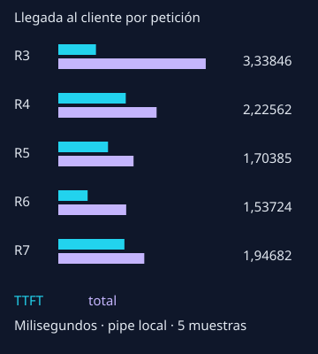

Replay de generaciones y streaming medidos. No ejecuta el modelo ni produce streaming en vivo. Los controles de filtros recalculan distribuciones sobre logits guardados, no nuevos forwards.
Desplaza las tablas para ver todas las columnas. Modelo, temperatura y política de selección tienen probabilidades diferentes.
| ID | Token | Modelo | Con T | Selección | Retenido |
|---|
Usa el prefijo/paso seleccionado en Recorridos. Cambiar estos parámetros no genera otra frase.
Orden: temperature → top-k → renormalizar → top-p → renormalizar. La masa retenida se mide sobre la distribución tras temperature.
Desplaza la tabla para ver las probabilidades de selección.
| ID | Token | Modelo | Con T | Selección | Retenido |
|---|
JSONL real por pipe local: dos warmups y cinco mediciones. El slider solo inspecciona la captura; no reproduce su velocidad ni ejecuta inferencia.
Desplaza la tabla para comparar todos los relojes relativos y chunks.
| Frame | Token | Productor ms | Cliente ms | Chunk |
|---|

Startup excluido. CPU, modelo de 3205 parámetros, sin KV cache o concurrencia; estas muestras no son un benchmark de un LLM o API de red.